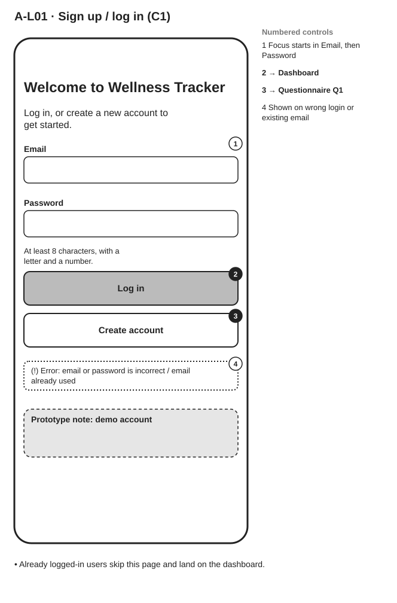

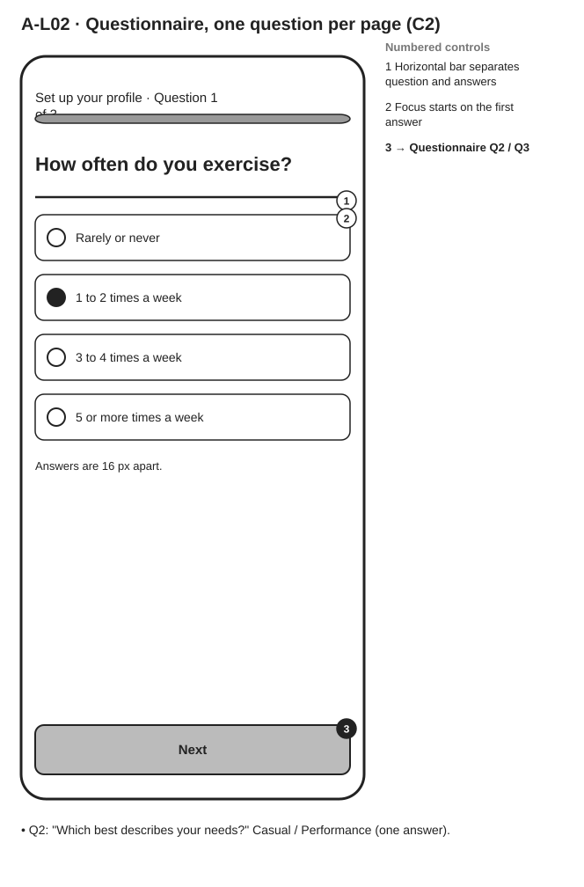


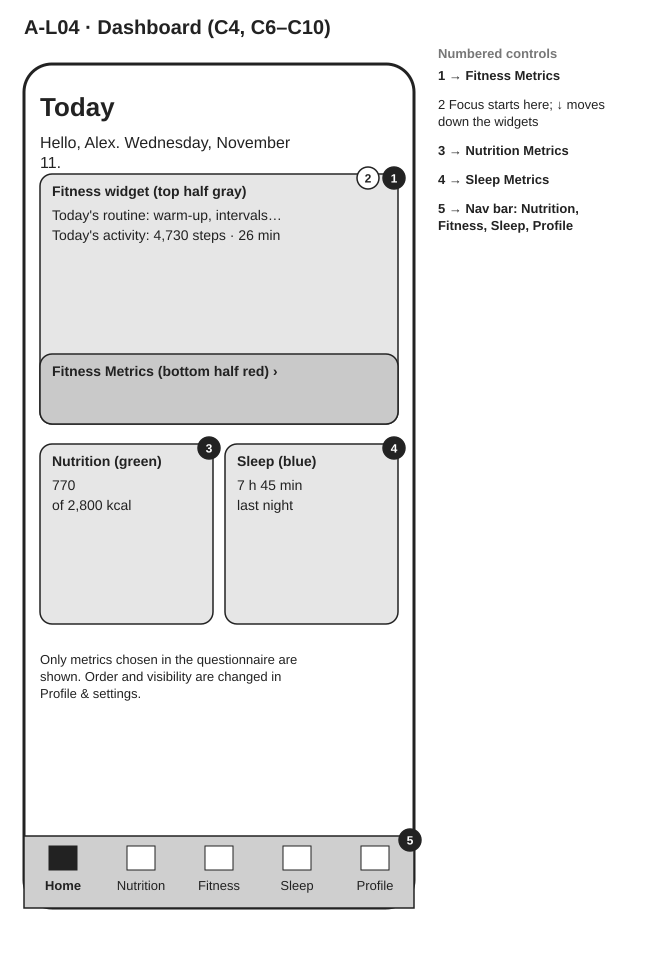

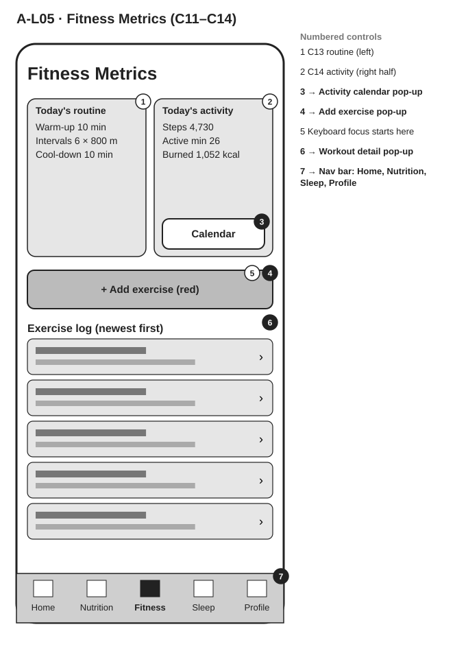

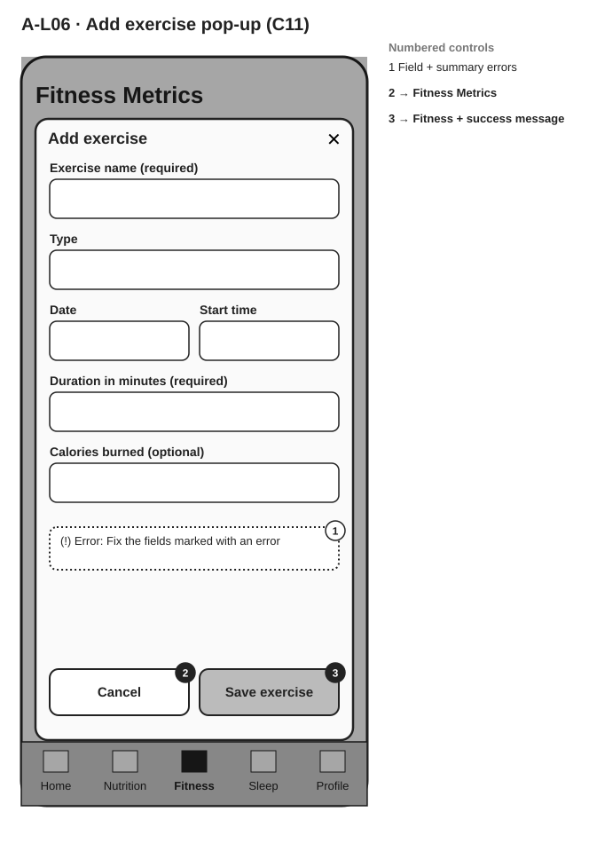

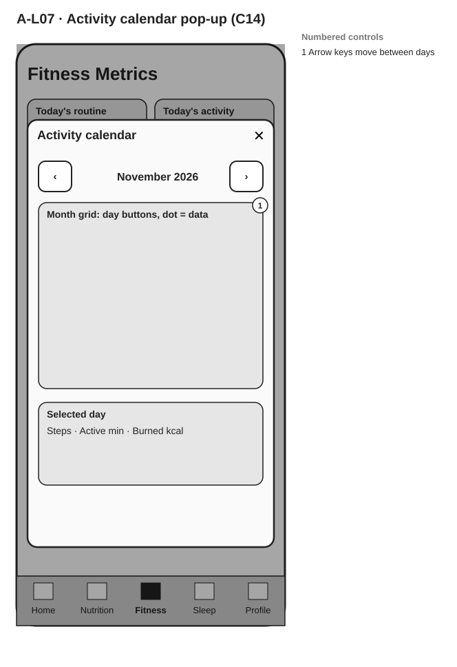

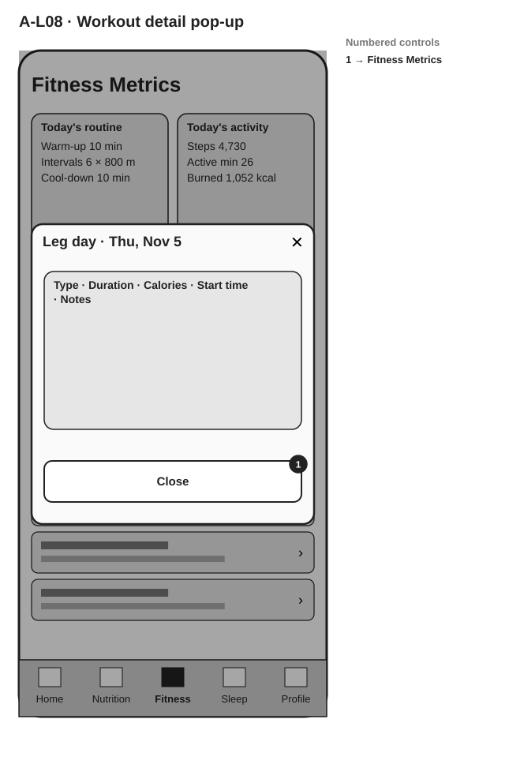

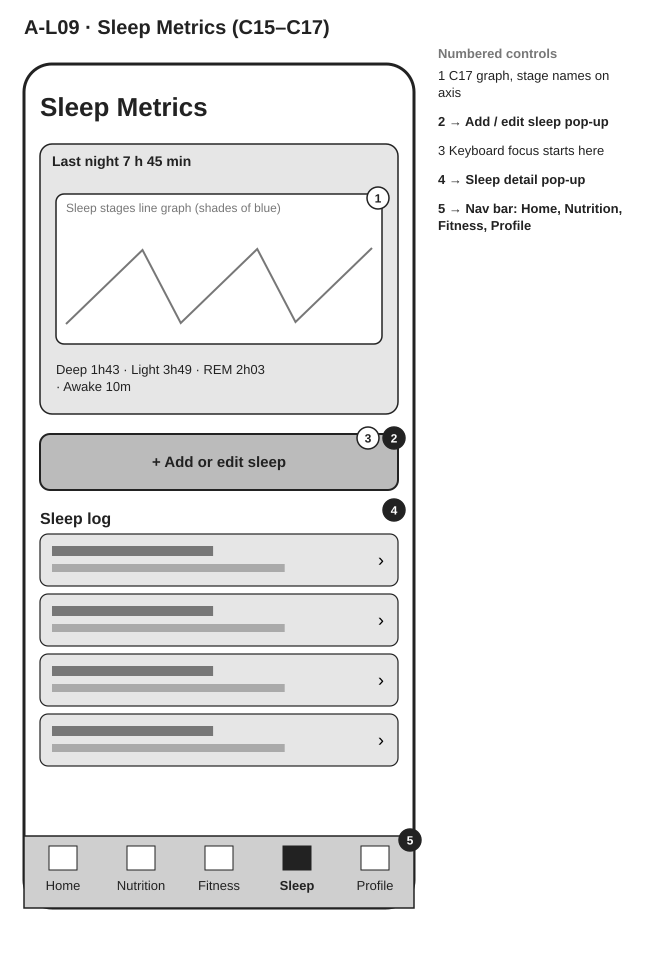


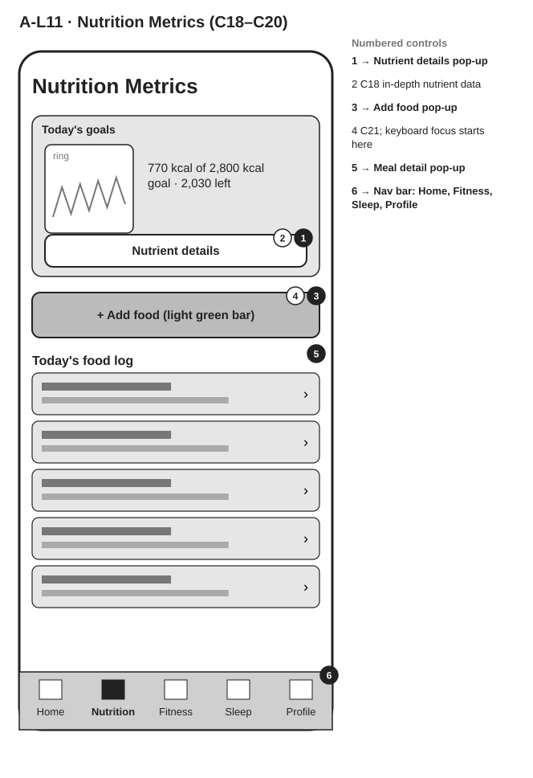

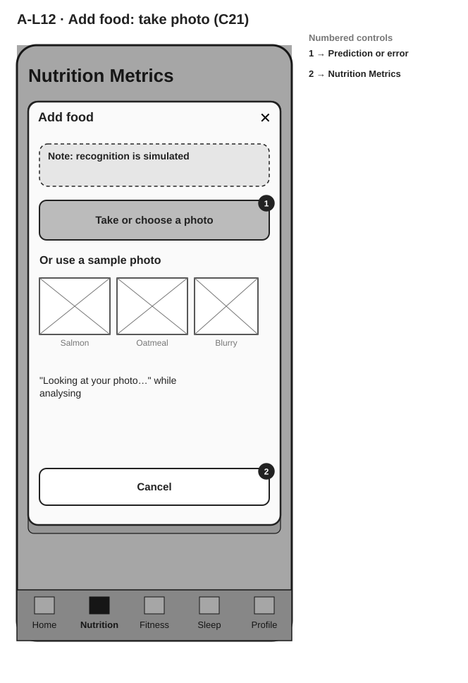

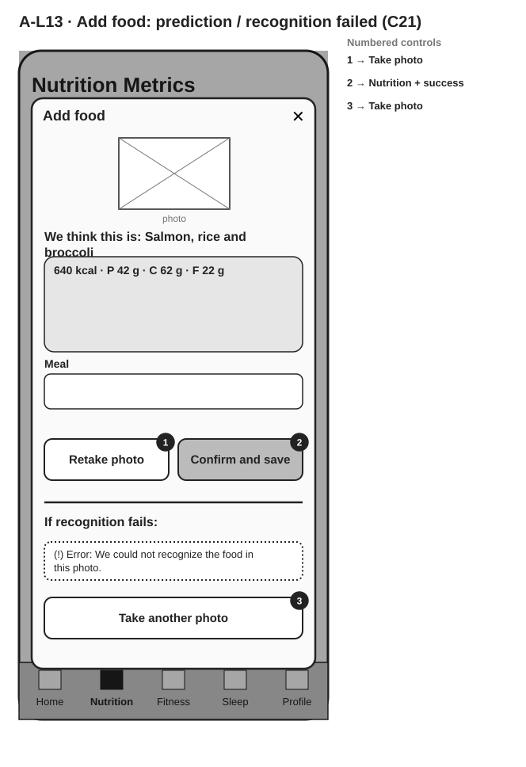

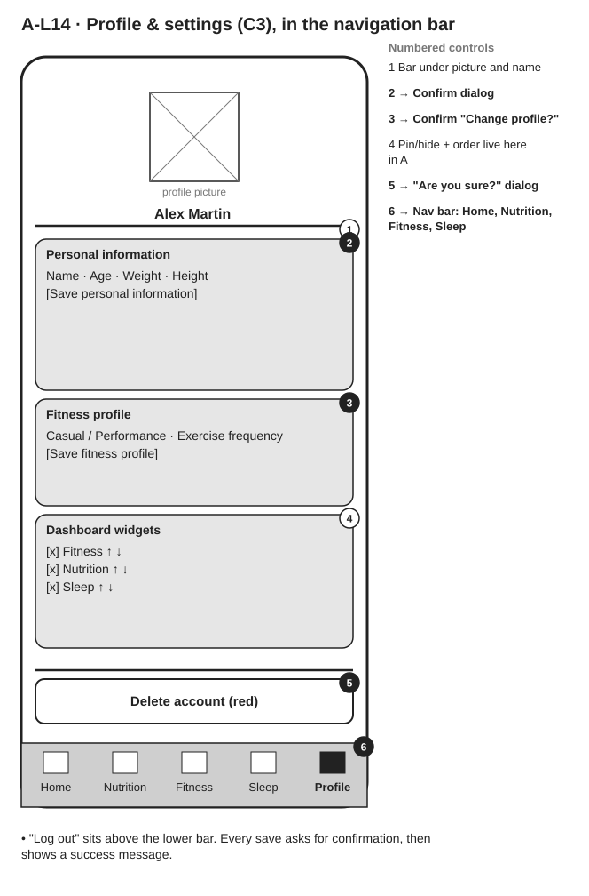

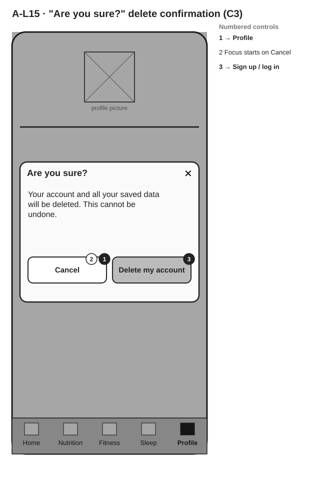
Gray-box wireframes at 390 × 844 for every essential screen of the initial design (Task 3 Output A). Arrows in the right margin show where each control leads; dotted lines are annotations. Pop-ups are drawn over the dimmed page they open from.
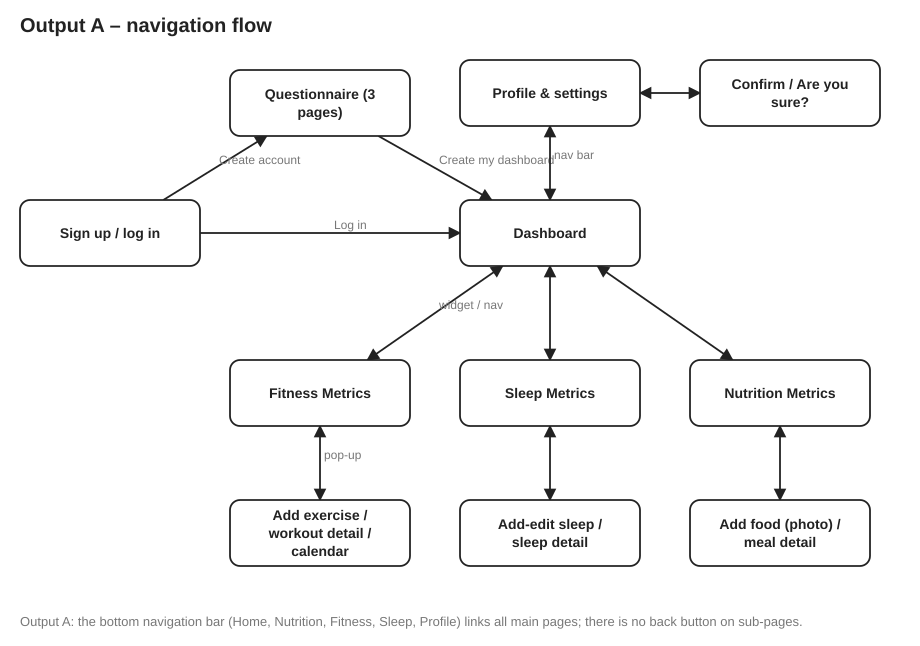












